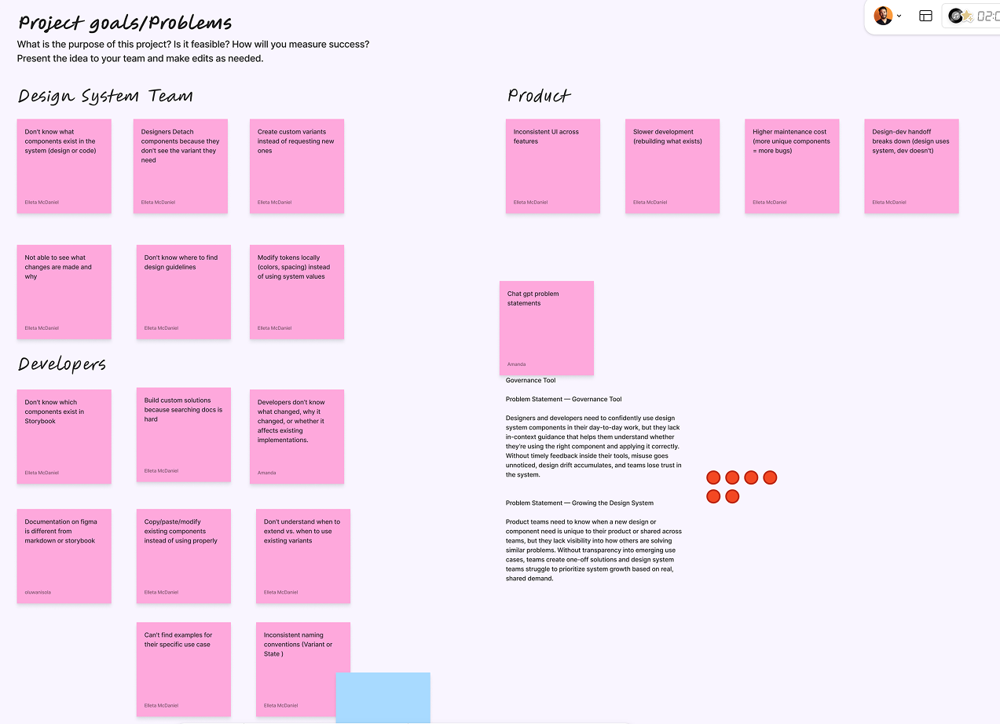
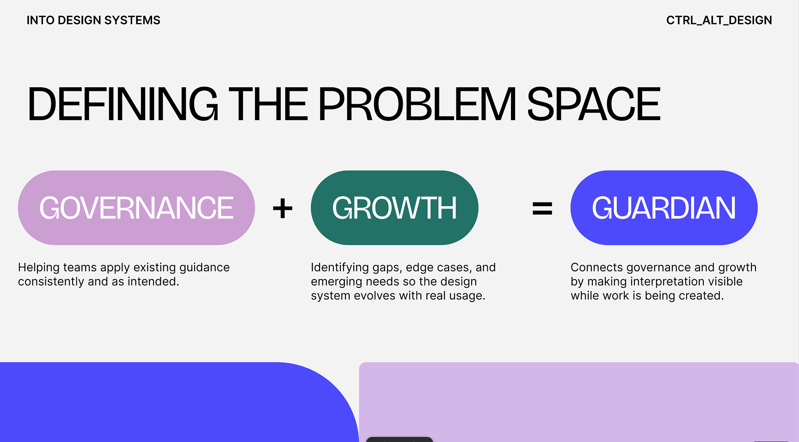
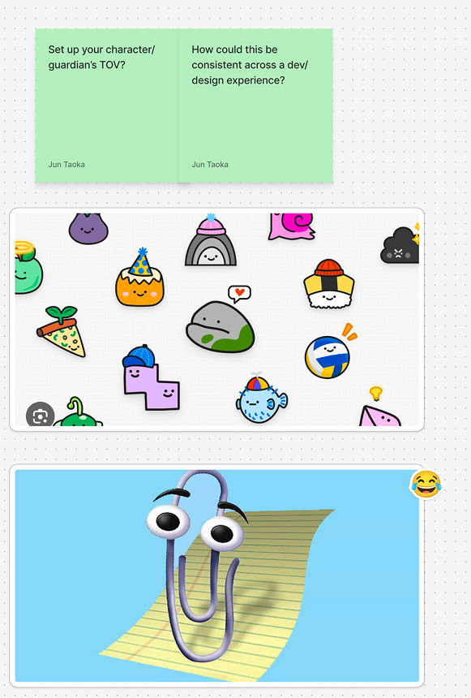

Loading...
My Role
Team
Stake
Into Design Systems Hackathon
Timeline
48 Hours (Sprint)
In April 2024, Figma released "FigPals" as a temporary April Fools feature. Its removal sparked an unexpected rebellion: over 3,000 users signed a petition demanding their return.
When I joined the Into Design Systems Hackathon team, ctrl_alt_design, we saw an opportunity to turn this community icon into a functional powerhouse.
This wasn't just about aesthetics; it was about identity and tone of voice. The Maker made these complex AI configurations tangible and fun.
- The Extension Brain: Handled logic and LLM orchestration, bypassing sandbox timeouts.
- The Plugin Hands: Headless plugin that provides canvas context and executes actions.
- The UI Injection: Physics-based avatars that follow user focus, acting as a visual anchor.
Metrics & KPIs
Next Steps
Our journey doesn't end with the hackathon. As a team, we are committed to the continued evolution of the FigPal Guardian, refining the intercessor logic and expanding the "Collective Memory" capabilities through real-world stress testing.